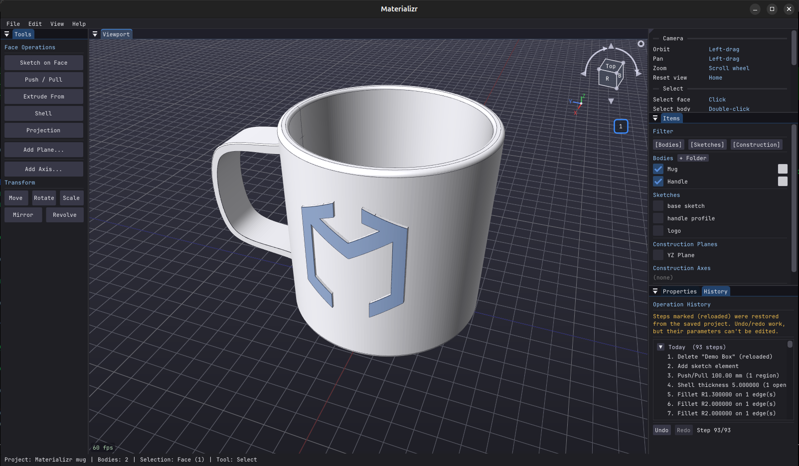
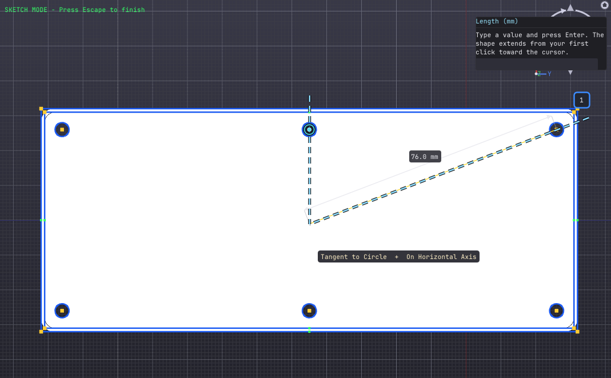
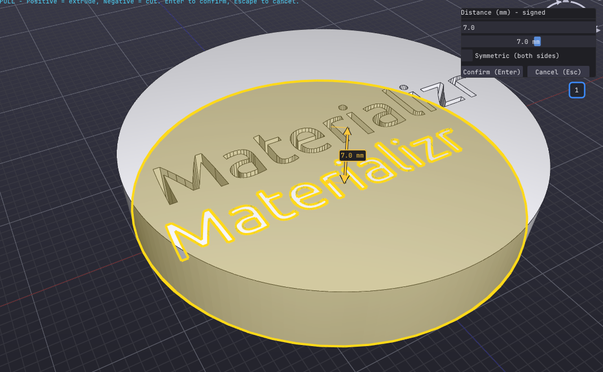
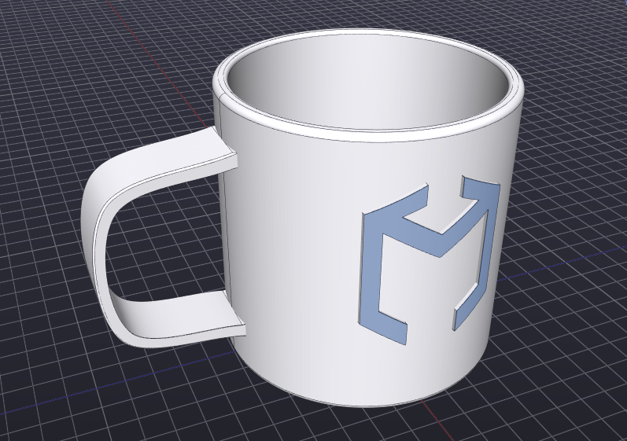
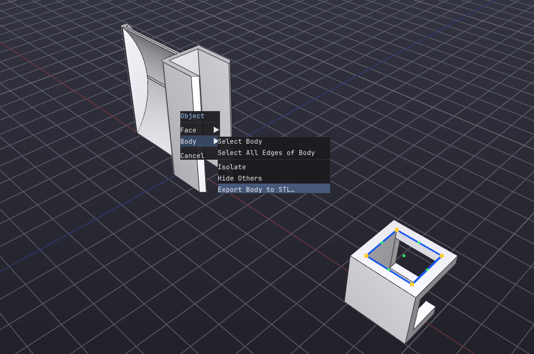

Real B-rep solids on the OpenCASCADE kernel — constraint sketches, validated threads, projection onto curved faces. The middle ground between dead-simple and fully-featured.

Lines, arcs, splines and polygons with SketchUp-style snapping — endpoints, midpoints, perpendicular, tangent, 15° increments. Add dimensions and constraints only when you want them.

Start from a primitive or push/pull a sketch — then extrude, lathe a profile, revolve a body like a fan or hinge, sweep, loft, run booleans, fillet & chamfer, shell, mirror and circular patterns. Edit faces directly — taper a draft, scale a wing tip, dial a hole to an exact diameter.

Validated internal and external screw threads with sensible coarse defaults. Projection engraves or embosses any sketch onto a flat — or curved — face. Wrap a logo around a cylinder in a few clicks.

STEP and IGES in and out, STL and glTF export (Z-up corrected for printing), sketch → SVG export (1:1 mm, for laser cutters and 2.5D CNC), SVG import, PNG viewport export. The native .materializr format stores bodies, sketches and the full editable history.

Every action is a history step you can revisit, even after closing and reopening the project. A few heavy finishing steps — like threading — are applied last, but the rest of your model stays open to rework. Plus construction planes & axes, Section View, and auto-saved version snapshots.
Enough genuine parametric solid modeling to make real parts — without a steep learning curve, a subscription, or an account. If beginner tools feel limiting and pro tools feel heavy, that gap is exactly what Materializr is for.
It isn't trying to replace SolidWorks, Fusion 360 or FreeCAD. It's young software built quickly, so expect rough edges — but operations validate their results and refuse rather than corrupt your model. Save often, and send bug reports.
Free and open source under GPLv3. No account required.
Open-source parametric 3D CAD for makers. Built on OpenCASCADE. GPLv3.